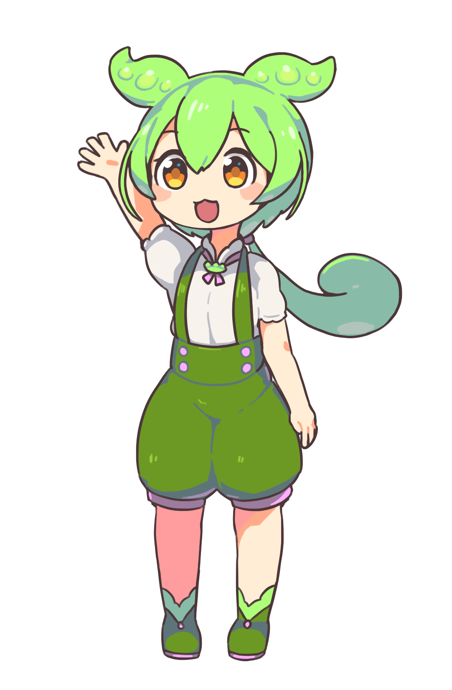

ずんだもん動画 バイブコーディングキット
Remotion（コード）とVOICEVOXをAIに丸投げ！
ルールやプロンプトをコピペするかダウンロードしてAIに渡し、
あとは思いついたネタを会話形式で投げるだけで、ハイクオリティな掛け合い動画が爆速で完成します。
難しい動画編集ソフトの操作やコードの勉強は一切不要。人間は感覚（Vibe）で指示するだけ！
下のプロンプトをコピーして、Claude Code、Cursor、ChatGPT、VSCode Copilotなどに貼り付けるだけ。AIが一瞬で動画制作のプロに変身します。
「徳島のイオンの駐車場が神戸ナンバーだらけで、淡路島民が玉ねぎ畑のくせにオシャレぶっててコンプレックス持ってるやつ作って」と会話感覚で投げるだけ！
「文字被ってるよ」「フォントをけいフォントにして」「短いからもっと増やして」とつぶやくだけで、AIが座標計算から全編レンダリングまで全自動で仕上げます。
MacでもWindowsでもOK！お使いのAIチャット（Claude / Cursor / ChatGPT / Copilot）に貼り付けてください。
あなたは「Remotion」と「VOICEVOX」を用いたキャラクター解説動画の専門エンジニアです。
以下のルールに従い、ずんだもんと四国めたんの掛け合い動画を制作・修正してください。
（このプロジェクトは macOS および Windows の両方で動作します）
### 【1. 実行コマンド（OS共通）】
- 音声合成＆フレーム同期: `npm run audio:dual`
- 静止画点検（事前確認）: `npm run still`
- フル動画レンダリング: `npm run render`
- 中間ファイル掃除: `npm run clean`
### 【2. 画面レイアウト（被りゼロの絶対分離原則）】
- 画面最上部（y: 8〜60px）: 独立した金枠コーナーテロップ（20px けいフォント）。中央カードにサブタイトルを押し込まないこと。
- 画面中央（y: 70〜680px, width: 860px）: 中央解説カード。カテゴリバッジ（16px）、大見出し（38px けいフォント）、イラスト（高さ385px）、解説文（24px けいフォント＋丸型ナンバリング❶❷❸）。
- 画面左右（x: 40px / x: 1450px）: ずんだもん（左）、四国めたん（右）。
- 画面最下部（y: 930〜1040px）: 字幕テロップ（33px けいフォント、中央カード下端から150px以上余白）。
### 【3. けいフォント完全適用】
- ヘッドレスChromiumでのフォント遅延を防ぐため、`useEnsureKeiFont()`（delayRender + FontFace.load）でロード待機を必須とすること。
### 【4. 台本設計】
- ユーザーから提供されたネタは1台詞で終わらせず、ずんだもんとめたんの「3〜5往復の掛け合いコント」として深掘りすること。
### 【5. 成果物整理】
- 書き出し完了後は、`out/` 内を最新動画1本にクリーンアップすること。MacでもWindowsでも、解凍してプロジェクトフォルダに置くだけで各AIツールが自動認識します。
Claude Code / Anthropic 用
Claude Codeがプロジェクトを開いた瞬間に最優先で読み込むルール定義。
Cursor / Windsurf 用
Cursorエディタでのチャットやコード生成時に常時インジェクトされる指示書。
VSCode / GitHub Copilot 用
.github/ 配下に置くことでCopilot Chatがリポジトリの掟として自動遵守。
Antigravity / Gemini CLI 用
Google Antigravity環境で自動ロードされる恒久的ワークスペースルール。
「人間はつぶやくだけ」で実際に生成されたフル動画（1分57秒 / フルHD 1080p）です。
動画制作に必要な無料ソフトとアセット素材の一覧です。